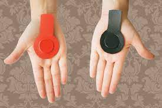

A terapia magnética (um tipo de terapia energética) usa campos magnéticos estáticos ou campos eletromagnéticos.
Os profissionais praticantes colocam ímãs no corpo para reduzir a dor ou melhorar o processo de cura. Para fazer esta
técnica, os ímanes podem ser inseridos em faixas de tecido, pulseiras, sapatos e outros objetos, de forma a serem
mantidos perto do local a tratar, ou o campo magnético pode ser produzido por um pequeno aparelho que é colocado junto da
pele, no local a tratar.